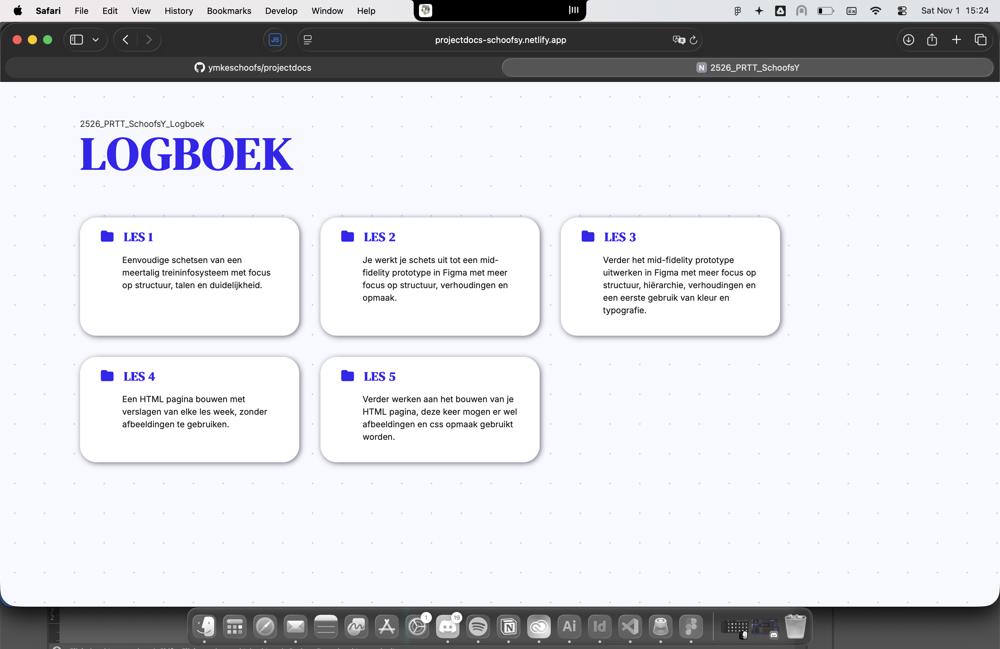
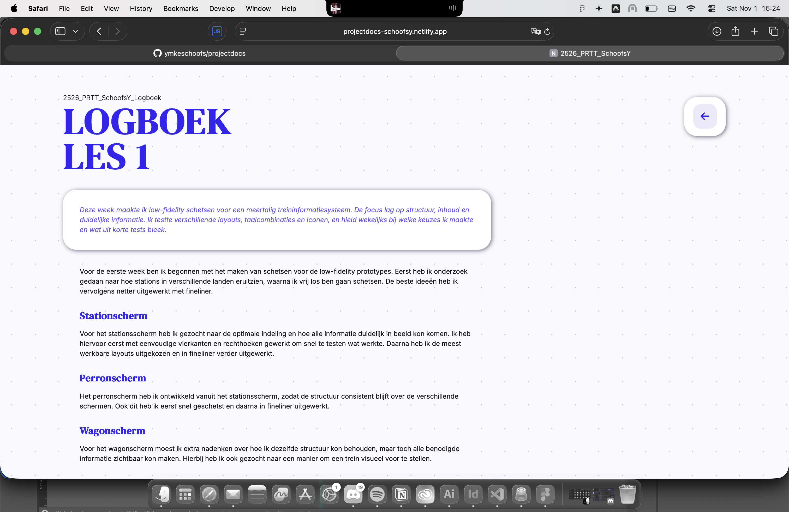

Deze week heb ik de projectdocumentatie opgezet, met HTML-pagina’s per week, CSS voor typografie en marges, navigatie tussen pagina’s, en publicatie via GitHub en Netlify.
In de les heb ik mijn bestaande GitHub-account gekoppeld aan Netlify, waarna ik een nieuwe repository heb aangemaakt en deze succesvol online heb gezet via Netlify. Het hele proces verliep vrij eenvoudig en zonder problemen. Tijdens de les heb ik daarnaast mijn klasgenoten geholpen met het opstarten en publiceren van hun eerste projecten.
Ondertussen heb ik de pagina’s van W1 tot en met W4 vormgegeven. Hoewel ik misschien iets meer werk heb gedaan dan gevraagd, verliep dit ook heel vlot en probleemloos. Hierdoor heb ik een duidelijk overzicht van de evolutie per week kunnen vastleggen en de navigatie tussen de pagina’s netjes kunnen instellen.
Op dit moment ziet de HTML-pagina er als volgt uit (al kan het uiterlijk inmiddels veranderd zijn).
 Ik denk dat ik de opdracht aanvankelijk verkeerd gelezen en ben ik meteen begonnen met CSS-styling. Doordat ik al veel ervaring heb met HTML, CSS en JavaScript, kostte het me weinig tijd om een basiswebsite op te zetten. De pagina is ondertussen mobielvriendelijk en responsive, al staat de terugknop op mobiele apparaten nog enigszins in de weg.